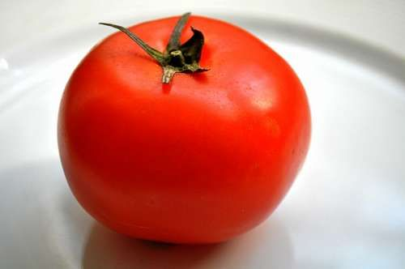

|

|
El Famoso Tomate Redondo
|
El tomate redondo es una de las variedades de tomates más habituales del supermercado, muy llamativo porque son todos redondos e iguales , con la piel muy gruesa y la carne firme, lo que hace que se conserve su buen estado durante bastante tiempo.
Resumen del mercado global del tomate
El aumento de los costes energéticos, que ha afectado duramente a muchos productores de invernadero, también se está dejando sentir en el mercado del tomate. En países europeos como los Países Bajos, este aumento de los costes de cultivo está mermando los márgenes de beneficio de los productores, a pesar de los altos precios del mercado. Por otro lado, en países con climas más suaves, como Turquía, donde se necesita menos energía para cultivar, esta situación podría considerarse una ventaja. En Italia, el aumento de este tipo de competencia está afectando a los precios en los mercados nacionales. Mientras tanto, en España y Sudáfrica, las condiciones meteorológicas adversas han hecho que se reduzca la producción en algunas zonas. España se ha visto afectada por las altas temperaturas del verano, mientras que Sudáfrica está lidiando actualmente con fuertes lluvias e incluso granizo en algunas regiones productoras del norte. En China y Brasil también se reportan problemas, pero no relacionados con el clima. Las medidas de control contra epidemias en China y los disturbios políticos en Brasil han dificultado que el producto llegue a su destino. Queda por ver cómo evolucionará el mercado a medida que muchas partes del mundo se adentren en el invierno.
Inserción en el mercado durante los años
| 1920 |
1940 |
1980 |
Actualidad |
| 🍅🍅 |
🍅🍅 |
🍅🍅🍅 |
🍅🍅🍅🍅 |